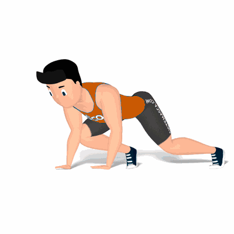

Escalador

Exercício avançado de alta intensidade, acelera a frequência cardíaca, e o metabolismo. Possibilita maior resistência dos membros inferiores, estimulando a coordenação motora.
Ficha Técnica
Tipo: Funcional
Grupo Muscular: Corpo
Aparelho: Nenhum
Músculos: Nenhum
Como realizar
- Posição de prancha alta;
- Braços estendidos com as mãos apoiadas ao solo;
- Perna esquerda estendida, perna direita flexionada, com um pequeno salto explosivo, inverte a posição das pernas movimentando o joelho esquerdo na direção do peito;
- Com outro salto, retorne à posição inicial;
- Repita o movimento pelo número de repetições orientado pelo professor.
 RC STORE
RC STORE